Master's thesis · Projection performance · Graz 2026
Feminist history has almost no address in this city.
Of roughly 1,700 streets and squares in Graz, about 60 carry the name of a woman. That is fewer than the ones named after plants.
Kein Ort. Nirgends. is a two hour projection mapping piece on a plain garden wall in Zimmerplatzgasse in Graz. It tells the feminist story of this place.
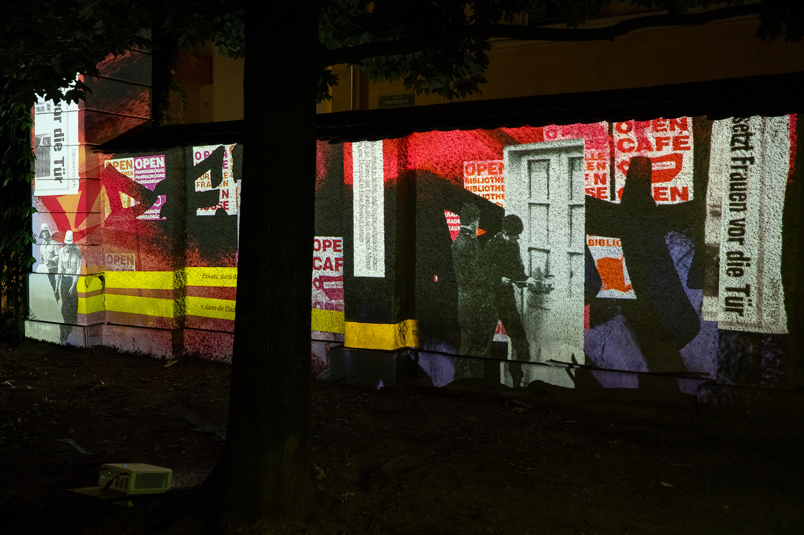
In the 1970s and 1980s women had almost no autonomous space of their own. Flats, meeting rooms, money and infrastructure were rarely in their own hands, and a room to organise in was a matter of permission rather than of right. Across Europe women stopped asking for it and took it instead.
Amsterdam 1974, Zurich 1980, the same argument each time about housing and about who is allowed to decide what a city is for. Women organised inside these movements and usually had to claim their own rooms within them as well.
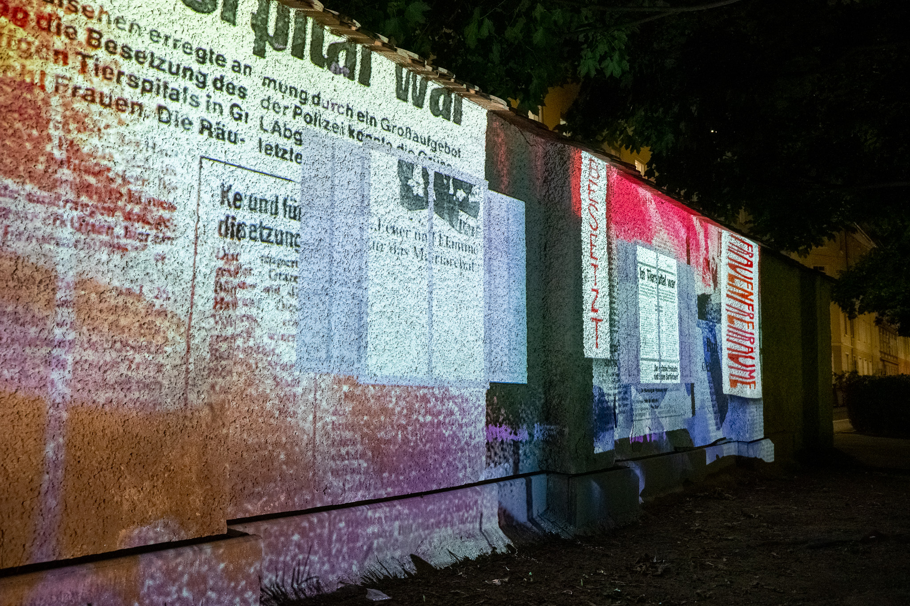
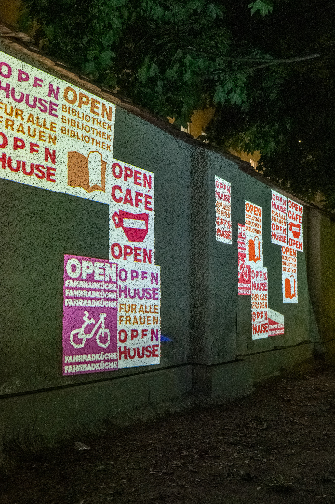
Graz 1991
The empty veterinary hospital in Zimmerplatzgasse was taken over by women who wanted a house that belonged to them. For a short time it held an open café, an open library, a bicycle kitchen and rooms open to all women. Everything in it was free and run collectively.
The house was cleared by a large police operation. First it stood empty, then it was stripped, then it came down. What is left of it today is a garden wall and a patch of grass.
First the windows. Then the roof tiles.
Last came the excavator.
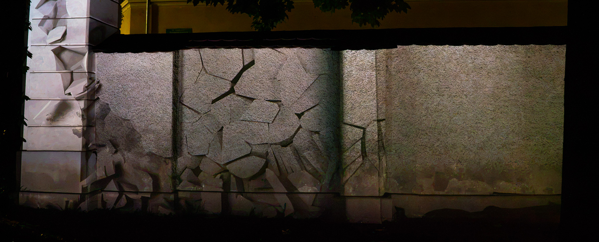
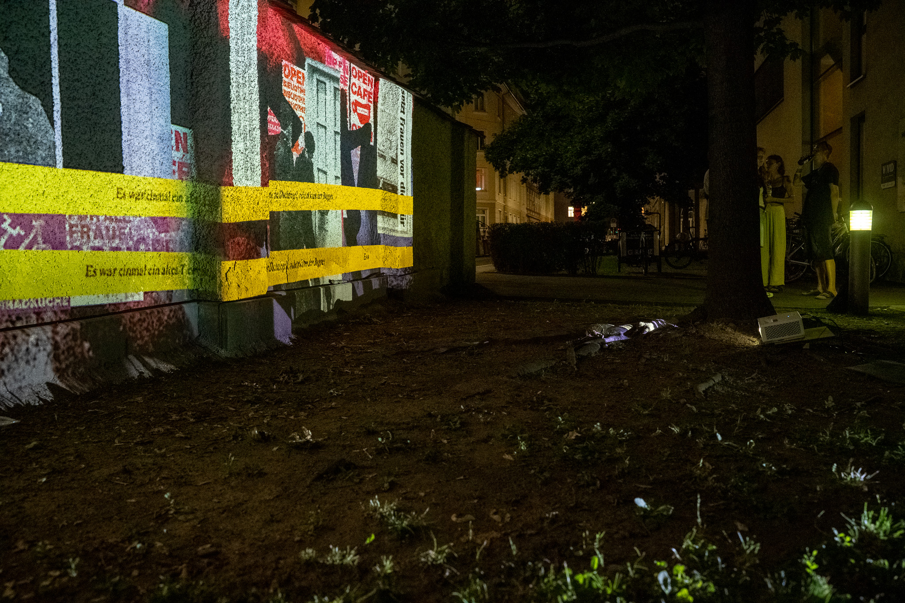
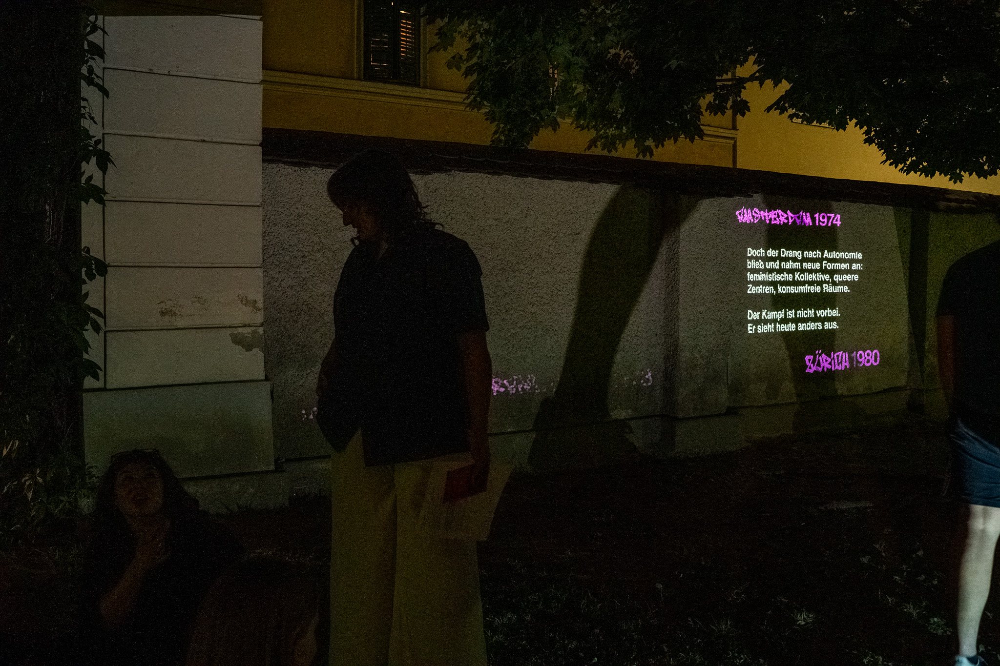
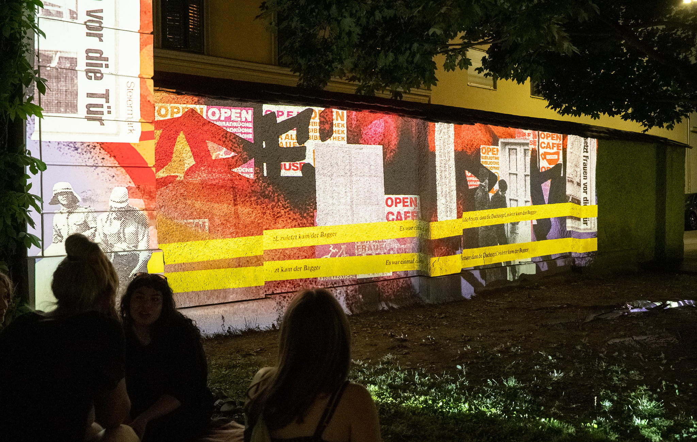
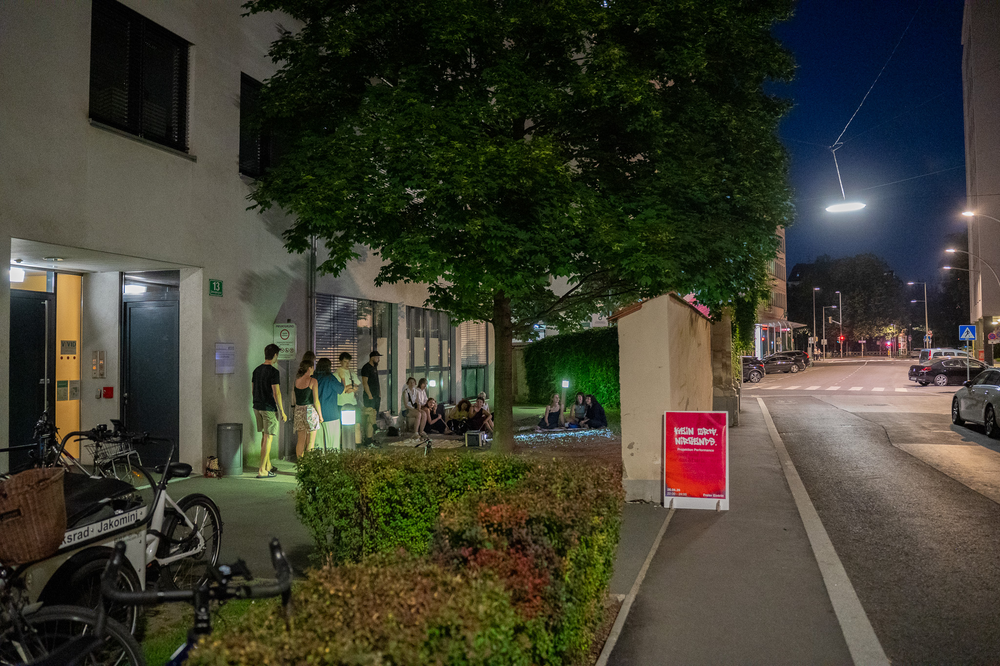
The urge for autonomous space did not disappear with the eviction. It moved into feminist collectives, queer centres and rooms without consumption, and it still runs into the same questions about rent, permission and who is seen in public space. The fight is not over. It looks different now.
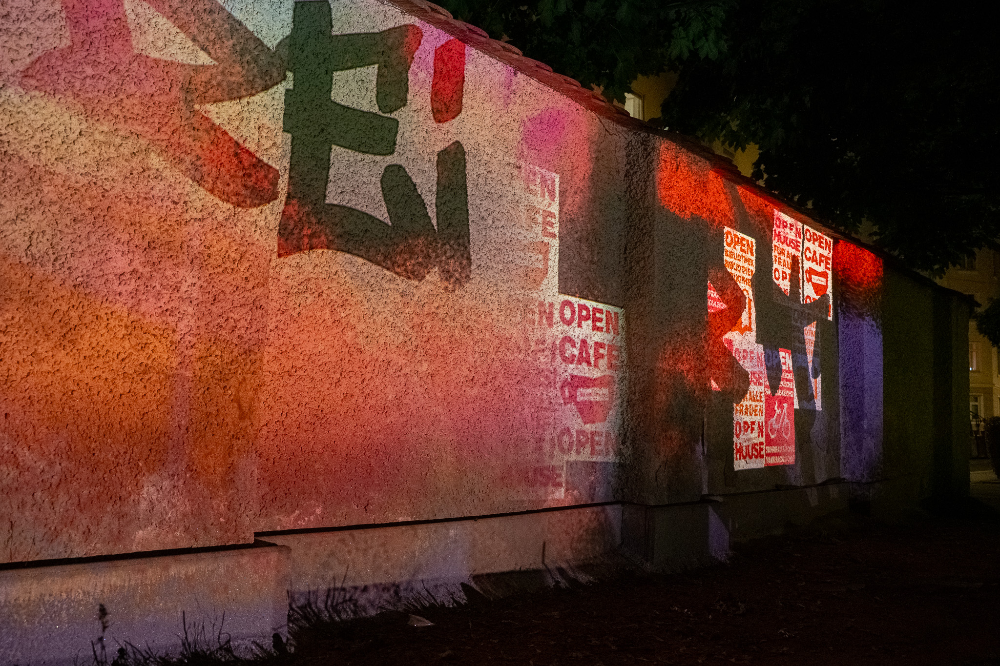
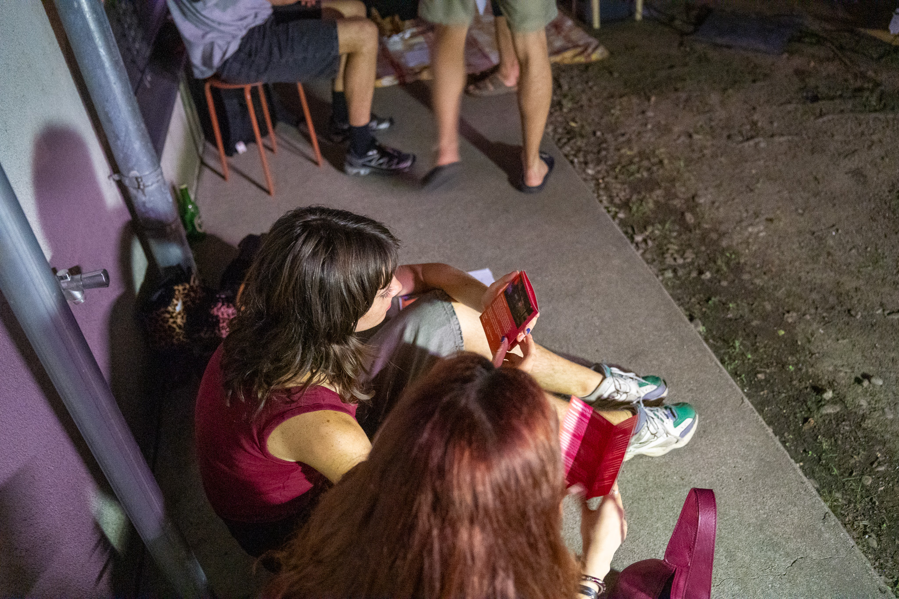
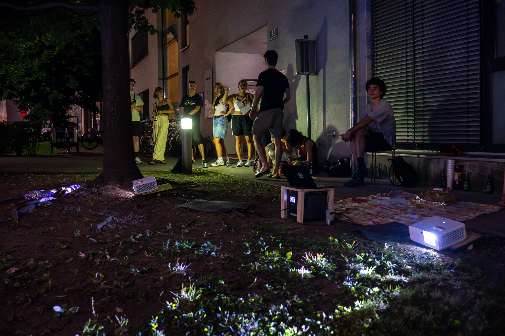
Master's thesis in Exhibition Design, shown as a free public projection in Zimmerplatzgasse, Graz. Thanks to everyone who came and stayed.